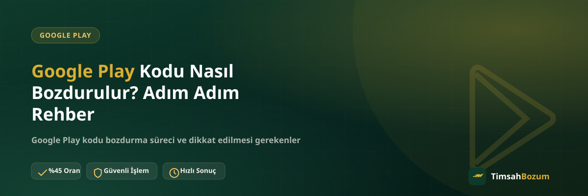

Elinde kullanmayacağın bir Google Play kodu varsa — hediye geldiyse, yanlış tutar aldıysan ya da Play Store'da harcayacağın bir şey yoksa — bu kodu WhatsApp üzerinden nakde çevirmek mümkün. Ama sürecin nasıl işlediğini, hangi bilgilerin gerektiğini ve hangi kodların kabul edildiğini bilmeden başlamak işlemi gereksiz yere uzatabiliyor. Bu yazıda Google Play kodu bozdurma sürecini baştan sona, adım adım anlatıyoruz.
Google Play Kodu Bozdurma Süreci Nasıl İşliyor?
Google Play kod bozdurma, kod tabanlı bir hizmet: hesabındaki bakiye değil, henüz hiçbir hesaba tanımlanmamış bir kod bozduruluyor. Bu yüzden bakiye tabanlı hizmetlerden (Pokus, Paycell, mobil ödeme) farklı işliyor — kodun tamamı tek seferde değerlendiriliyor, kısmi bozum söz konusu değil. Süreç WhatsApp üzerinden yürüyor: kod bilgini paylaşıyorsun, güncel oranı teyit ediyorsun, onay sonrası ödemen alınan yöntemle yapılıyor.
Google Play Kodu Bozdurmak İçin Ne Gerekiyor?
İşleme başlamadan önce elindeki kodun değerini ve hangi ülke veya bölgeye ait olduğunu bilmen yeterli. Kodun kendisini (yazı veya net bir fotoğraf olarak) hazırda tutman, WhatsApp'ta ilk mesajdan itibaren sürecin hızlı ilerlemesini sağlar. Üyelik, form doldurma veya kimlik belgesi gibi bir şart yok; tek ihtiyacın kod bilgin ve WhatsApp üzerinden iletişim.
Adım Adım Google Play Kodu Nasıl Bozdurulur?
Süreç dört ana adımdan oluşuyor. Önce resmi WhatsApp hattımıza (+90 543 887 21 71) yazarak Google Play kodu bozdurmak istediğini belirtiyorsun. Ardından kodun değerini ve varsa bölge bilgisini paylaşıyorsun. Üçüncü adımda güncel oranı teyit ediyorsun — sitede yayınlanan oran genel bir referans, işlem anındaki oran WhatsApp'tan netleşiyor. Son adımda kod bilgini eksiksiz paylaşıyorsun ve doğrulama sonrası ödemen, WhatsApp üzerinden görüşülen yöntemle yapılıyor.
Google Play Kodu Bozdururken Nelere Dikkat Etmelisin?
En önemli nokta, kodu paylaşmadan önce hiçbir Google hesabına tanımlamamış olman. "Acaba geçerli mi?" diye kodu Play Store'a girmek, kodu bakiyeye dönüştürüp bozdurulamaz hale getirir — kodun geçerliliği bizim tarafımızdan kontrol ediliyor, senin denemene gerek yok. Kod fotoğrafını gönderiyorsan karakterlerin net ve okunaklı olmasına dikkat et; bulanık veya parlamalı bir görüntü gecikmeye yol açar. Kodun hangi bölgeye ait olduğunu baştan belirtmek de süreci hızlandırıyor, çünkü Google Play kodları ülkeye özel çalışıyor.
Google Play Kod Bozdurma Güvenilir mi?
İşlem karşılıklı teyit ile ilerliyor: önce oran konuşuluyor, kod bilgisini paylaşman ondan sonra. Google hesabına erişim istenmiyor; şifre, e-posta doğrulama kodu veya kurtarma bilgisi hiçbir aşamada talep edilmiyor. Böyle bir bilgi isteyen herhangi bir kanal, TimsahBozum adına hareket ettiğini iddia etse bile, dolandırıcılık şüphesi taşır. Tüm işlemler yalnızca resmi WhatsApp hattımızdan yürür; farklı bir numara veya platformdan gelen taleplere bilgi paylaşmadan önce hattı doğrulaman önerilir.
Google Play Kodu Bozdurma Ne Kadar Sürede Tamamlanır?
Kod paylaşıldıktan ve oran onaylandıktan sonra süreç doğrulamayla ilerliyor. Kesin süre kodun kontrolüne ve o anki yoğunluğa göre değişebilir, bu yüzden güncel bilgiyi WhatsApp'tan teyit etmek en doğrusu. Kodun kullanılmamış, eksiksiz ve doğru bölgeye ait olması sürecin hızlı ilerlemesindeki en belirleyici etken.
Sık Yapılan Hatalar Nelerdir?
En sık karşılaşılan hata, kodu "kontrol amaçlı" bir hesaba tanımlamak — bu işlemi geri döndürülemez şekilde iptal ediyor. İkinci sık hata, kod fotoğrafında bazı karakterlerin okunamaması; mümkünse kodu yazıyla paylaşmak daha güvenli. Üçüncü hata ise bölge bilgisini paylaşmamak: yurt dışı bölgesine ait bir kodu Türkiye koduymuş gibi bildirmek işlemi gereksiz yere uzatabiliyor. Son olarak, oranı hiç teyit etmeden kodu paylaşıp beklemeye geçmek de sık karşılaşılan bir alışkanlık; oranı önce görmek, işlemden vazgeçme hakkını elinde tutmanı sağlar.
Birden Fazla Google Play Kodu Aynı Anda Bozdurulur mu?
Evet. Elinde birden fazla Google Play kodu varsa hepsini tek WhatsApp görüşmesinde paylaşabilirsin; kodlar sırayla kontrol edilip toplu olarak işleme alınır. Bu, her kod için ayrı ayrı mesaj göndermekten çok daha hızlı sonuç verir. Kodları paylaşırken her birinin değerini ve varsa bölgesini ayrı ayrı belirtmen, kontrolün karışmadan ilerlemesini sağlar.
Google Play Kodu Ekran Görüntüsüyle mi Yazıyla mı Paylaşılmalı?
İkisi de kabul edilir, ancak kodu yazı olarak paylaşmak genelde daha hızlı sonuç verir; çünkü fotoğraflarda kazı-kaz alanındaki parlama veya bulanıklık yüzünden bazı karakterler yanlış okunabiliyor. Fotoğraf paylaşacaksan kodun tamamının net, ışıksız ve odakta olduğundan emin ol. Kodu yazıyla gönderirken de her karakteri (özellikle 0 ile O, 1 ile I gibi birbirine benzeyenleri) dikkatlice kontrol etmen, gereksiz bir tekrar mesajını önler.
Google Play Kodu ile Razer Gold ve iTunes Kodu Arasındaki Fark Nedir?
Üçü de kod tabanlı hizmet: hesap bakiyesi değil, tek kullanımlık bir kod veya PIN bozduruluyor ve kısmi bozum söz konusu değil. Aralarındaki fark oran ve kullanım alanı — hangi kodun elinde olduğuna göre ilgili hizmet sayfasından güncel oranı görebilir, WhatsApp'tan teyit ederek işlemini başlatabilirsin. Elinde birden fazla türde kod varsa bunları tek görüşmede birlikte belirtmen süreci ayrıca hızlandırır.
Sık sorulan sorular
Ilgili Yazilar
- Razer Gold Kodu Nasıl Bozdurulur? Adım Adım Rehber
- iTunes Hediye Kartı Kodu Nasıl Bozdurulur?
- Bozum İşlemi Yaparken Nelere Dikkat Etmeli
Google Play kodu bozdurma, doğru bilgiyi baştan paylaştığında hızlı ilerleyen basit bir süreç. Kodun değerini ve bölgesini hazırda tutarak WhatsApp hattımızdan yazabilir, güncel oranı teyit ederek işlemini başlatabilirsin.